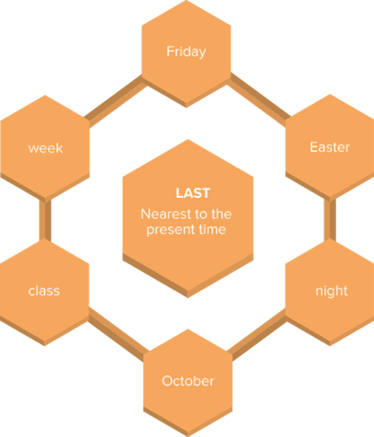

Kids using a smartphone.
George Rudy/Shutterstock.com, Daxus/iStockphoto.com
The term “lifestyle” often refers to aspects of a person’s life, such as what they eat, what kind of house they own, what appliances and toys they buy. It is also about personal behaviors such as driving habits and interactions with the environment. Humans have evolved in the most surprising ways, and life keeps changing every day.
In the last 50 years, there have been so many advances in technology and medicine, and such huge paradigm shifts in romance and religion, that it is almost impossible to imagine how things were in the past. Of course, many things changed for the best, making people’s lives easier and more comfortable, but some say the same technologies that helped overcome physical barriers to communication increased the distance between people. When having a conversation with an older person, we often hear them start a sentence with: “Back in my days…”, followed by a feeling of nostalgia.
In 1969, if you wanted to talk to a friend, you had to call them or pay them a visit. In 2020, you may check the social media and find out even where they traveled to on their last vacation. Back then, if you decided to buy food or a new pair of shoes, you had to go out and shop, but today you can order whatever you please on the internet. Half a century ago, if you liked to read, you had to buy paper books, but nowadays there are e-readers and apps for little or no money at all.
Fortunately or unfortunately, many things disappeared into the past, but they surely affect our present in one way or another, showing us a whole world of possibilities for the future.
- Why do you think some people feel nostalgic about the past?
- In your opinion, what is the most incredible characteristic of life in the past, which currently doesn’t exist?
- What do you think is the worst characteristic of lifestyle in the past that we don’t have anymore?
 Neste capítulo, serão abordadas as habilidades
EM13LGG301
,
EM13LGG402
,
EM13LGG403
.
Neste capítulo, serão abordadas as habilidades
EM13LGG301
,
EM13LGG402
,
EM13LGG403
.
Read the following text:
What life was like in the 1960s
Lambert/Getty Images
Life is quite different from what it was 50 years ago. We see much progress and many successes, but also some failures. While many of the traits that make us human remain the same, the world is almost unrecognizable from what it was.
If you needed to do anything that involved finances, you had to go to the bank and talk to a bank teller. Although Barclays introduced the world’s first automated teller (ATM) in London in 1967, it didn’t make its way to the United States until 1969.
Children didn’t have to use car seats until 1971.
Nobody worried about skin cancer. It wasn’t until 1978 that the FDA proposed its first sunscreen guidelines to show people the dangers of skin cancer.
“What life was like in the 1960s”. Past Factory . Available at <www.pastfactory.com/culture/what-life-was-like-in-the-1960s/?chrome=1&Exc_D_LessThanPoint002_p1=1>. Accessed on July 12th, 2021.
Take another look at the text and underline all the verbs. In which verb tense are most of them? Why did the author use such tense? Discuss it with your classmates.
Simple Past tense
We use narrative tenses to talk about the past. We find them in stories and descriptions of past events, such as personal anecdotes. The four narrative tenses are the Simple Past, Past Continuous, Past Perfect and Past Perfect Continuous and one or more of these can be used in a sentence. In this unit, we are studying the Simple Past.
We use the Simple Past tense, often just called the Past tense, to talk about something that started and finished at a definite time in the past.
To form the Past tense, the main rule is that, for every verb in English, there is only one form of it in the Past tense. To make sentences in the affirmative form, you just change the verb to its Past tense. In this chapter, we are going to focus on the regular verbs.
Regular verbs: spelling rules
Some verbs are called “regular” verbs, because they follow a pattern when switching between tenses. The general rule to form the Simple Past of regular verbs is by adding -ed to the end of them.
There are some exceptions to this rule: pay – paid; lay – laid.
If the verb ends in the letter -e , we just add the -d to the end.
If the verb has one syllable and ends in a consonant + vowel + consonant (CVC), we double the final consonant and add -ed .
If the verb has two syllables, ends in CVC and the stress is in the second syllable, we also double the final consonant and add -ed .
If the verb has one syllable and ends in W, X or Y, we do not double the final consonant.
If the verb has two syllables and ends in a consonant + vowel + consonant (CVC), but the stress is on the first syllable, we do not double the final consonant.
If the verb ends in -y preceded by a consonant, we change -Y to -I after the consonant and add -ed .
Adverbs of time
When we talk about the Simple Past tense, it is common to specify the time when the action happened. However, in some cases, we can infer it from the context. For example:
In other cases, we use time expressions, or adverbs of time, to define when things happened. The most common ones are:
Relationship in time adverbs
This type of adverb of time defines the relationship between two verbs. Some examples are: previously, earlier, before.
Pronunciation
The pronunciation of the regular verbs in the Past tense is sometimes tricky, because there are three different cases. To be able to distinguish one from the other, you must pay attention to the sounds that come before the -ed , not to the letters.
An important distinction to make is between voiceless and voiced sounds:•
The /t/ sound
If the verb in the base form ends in a voiceless sound, then the -ed ending sounds like t . We mix the t with the previous consonant and we do not pronounce an extra syllable.
worked – dropped – finished – stopped – laughed (“f” sound) – coughed (“f” sound) – watched
The /d/ sound
If the verb in the base form ends in a voiced sound, then the -ed ending sounds like d . We mix the d with the previous consonant and we do not pronounce an extra syllable.
moved – returned – stayed – studied – married – widowed – raised – engaged – traveled
The /id/ sound
If the verb in the base form already ends in a -t or -d sound, then the -ed ending sounds like id . It is pronounced as an extra syllable.
started – graduated – visited – separated – dated – attended
Pronunciation of ED: Past Tense, Past Participles and Adjectives.
The website provides more information about how to pronounce the -ed sound at the end of words in English.
Available at <http: //p.p4ed.com/GFXGT>.
Grammaring
1
Read the text and fill in the blanks with the past form of the regular verbs from the chart. You will need to repeat some verbs.
matter – lay – die – achieve – convince – live
Health
In 1800 the health conditions of our ancestors were such that around 43% of the world’s newborns _________ before their 5th birthday. The historical estimates suggest that the entire world _________ in poor conditions; there were relatively little variation between different regions, in all countries of the world more than every third child _________ before it was 5 years old.
It would be wrong to believe that modern medicine was the only reason for improved health. Initially rising prosperity and the changing nature of social life _________ more than medicine. It was improvements in housing and sanitation that _________ our chances in the age old war against infectious disease. Healthier diet – made possible through higher productivity in the agricultural sector and overseas trade – made us more resilient against disease. Surprisingly improving nutrition and health also made us smarter and taller.
But surely science and medicine _________ as well. A more educated population _________ a series of scientific breakthroughs that made it possible to reduce mortality and disease further. Particularly important was the discovery of the germ theory of disease in the second half of the 19th century. In retrospect it is hard to understand why a new theory can possibly be so important. But at a time when doctors did not wash their hands when switching from post-mortem to midwifery the theory finally _________ our ancestors that hygiene and public sanitation are crucial for health.
The germ theory of disease _________ the foundation for the development of antibiotics and vaccines, and it _________ the world to see why public health is so very important. Public health _________ hugely: Everybody benefits from everybody else being vaccinated, and everybody benefits from everybody else obeying the rules of hygiene.
With these changes global health _________ in a way that was unimaginable to our ancestors. In 2015 child mortality was down to 4.3% – 10-fold lower than 2 centuries ago. You have to take this long perspective to see the progress that we have achieved.
The chart shows the global decline of child mortality since 1800.
ROSER, Max. “The short history of global living conditions and why it matters that we know it”. Our World in Data. Available at <https: //ourworldindata.org/a-history-of-global-living-conditions-in-5-charts>. Accessed on August 4th, 2021. (CC BY)
2
Now answer the questions about the text using your own words.
- Why did so many newborns die in 1800?
- Which are some reasons that improved people’s chances against infectious diseases?
- Which simple action motivated by the discovery of the germ theory of disease finally convinced our ancestors that hygiene and public sanitation are crucial for health?
- What was the percentage of child mortality in 2015?
3
Write the following verbs in the Simple Past tense:
| play | |
|---|---|
| carry | |
| dance | |
| stop | |
| change | |
| pay | |
| enjoy | |
| use | |
| try | |
| wash | |
| arrive | |
| destroy | |
| hurry | |
| elect | |
| commit | |
| travel | |
| plan | |
| fix | |
| study |
4
Choose the proper adverb of time to complete the spaces.
- Daniel traveled _________________
- _________________ my best friend did not feel well.
- The boys stayed at Sue’s house _________________.
- Sophie was born _________________.
- I visited my uncle _________________.
( ) next Monday
( ) at the moment
( ) last Friday
( ) Yesterday
( ) Now
( ) Tomorrow
( ) a week ago
( ) today
( ) right now
( ) in 1999
( ) now
( ) tomorrow
( ) the last summer
( ) nowadays
( ) tomorrow
5
The following words end in -ed . How do you pronounce the endings correctly? Write [ d ], [ t ] or [ id ].
- cleaned – [ ]
- collected – [ ]
- arrived – [ ]
- decided – [ ]
- packed – [ ]
- liked – [ ]
- started – [ ]
- asked – [ ]
- rained – [ ]
- played – [ ]
PUC-Campinas 2018 (Adapt.) Leia atentamente o texto abaixo para responder à questão 1.
Lembrando e pensando a TV
Houve um tempo em que a TV – acreditem, ó jovens! – ainda não existia. Ouvia-se rádio, ia-se ao cinema. Mas um dia chegou às casas das pessoas um aparelho com o som vivo do rádio acoplado a vivas imagens, diferentes das do cinema, imagens chegadas de algum lugar do presente, “ao vivo”. Logo saberíamos que todas as imagens do mundo, inclusive os filmes do cinema, poderiam estar ao nosso alcance, naquela telinha da sala. Modificaram-se os hábitos das famílias, seus horários, sua disponibilidade, seus valores. A TV chegou para reinar.
A variedade da programação já indicava o amplo alcance do novo veículo: notícias, reportagens, musicais, desenhos animados, filmes, propagandas, seriados, esportes, programas humorísticos, peças de teatro – tudo desfilava ali, diante dos nossos olhos, ainda no tubo comandado por grandes válvulas e com imagem em preto e branco. Boa parte dos primeiros aparelhos de TV tinham telas de 16 a 21 polegadas, acondicionadas numa enorme e pesada caixa de madeira. Havia uns três ou quatro canais, com alcance bastante limitado e programação restrita a cinco ou seis horas por dia. Mais tarde as transmissões passariam a ser via satélite e ocupariam as 24 horas do dia.
Os custos da programação eram pagos pela publicidade, que tomava boa parte do tempo de transmissão. Vendia-se de tudo, de automóveis a margarina, de xaropes para tosse a apartamentos. Filmetes gravados e propagandas ao vivo sucediam--se e misturavam-se a notícias sobre exploração espacial, enquanto documentários estrangeiros falavam da revolução russa, da II Guerra, do nazismo e do fascismo, das convicções pacifistas de Ghandi, das ideias do físico Einstein sobre a criação e a legitimação da ONU etc. etc. Já as incursões históricas propiciadas pelos filmes nos levavam ao tempo de Moisés e do Egito Antigo, ao Império Romano e advento do Cristianismo, tudo entremeando-se ao humor de Chaplin, às caretas de Jerry Lewis e às trapalhadas das primeiras comédias nacionais do gênero chanchada. Houve também o tempo em que as famílias se agrupariam diante dos festivais da canção, torcendo por músicas de protesto, baladas românticas ou de ritmos populares “de raiz”. Enfim, a TV oferecia a um público extasiado um espetáculo variadíssimo, tudo nas poucas polegadas do aparelho, que não tardou a incorporar outras medidas, outros sistemas de funcionamento, projeção em cores e controle remoto.
As telas de plasma, o processo digital e a interface com a informática foram dotando a TV de muitos outros recursos, até que, bem mais tarde, tivesse que enfrentar a concorrência de outras telas, muito menores, portáteis, disponíveis nos celulares, carregados de aplicativos e serviços. Apesar disso, nada indica que a curto prazo desapareçam da casa os aparelhos de TV, enriquecidos agora por incontáveis dispositivos.
No plano da cultura e da educação, a televisão teve e tem papel importante. Os telecursos propiciam informação escolar específica nas áreas de Matemática, Física, História, Química, Língua e Literatura, fazendo as vezes da educação formal por meio de incontáveis dispositivos pedagógicos, inclusive a dramatização de conteúdos. Aqui e ali há entrevistas com artistas, políticos, pensadores e personalidades várias, atualizando ideias e promovendo seu debate. No campo da política, é relevante, às vezes decisivo, o papel que a TV tem na formação da opinião pública.
[...]
Numa espécie de espelhamento multiplicativo e fragmentário da nossa vida e dos poderes da nossa imaginação, a TV vem acompanhando os passos da vida moderna e ditando, mesmo, alguns deles, sem dar sinal de que deixará tão cedo de nos fazer companhia.
(Percival de Lima e Souto, inédito.)
1
O trecho Ouvia-se rádio, ia-se ao cinema , no texto principal, pode ser traduzido para o inglês como
- We listened to the radio, we went to the movies.
- One heard the radio, one went to cinema.
- One listened to radio, one went to movies.
- We listened to radio, we went to the cinema.
- We heard radio, we went to movies.
Col. Naval-RJ 2017 Texto para as questões 2 e 3.
My name is Patrick. I __________ on vacation to Brazil last Summer, and I __________ in a five-star hotel in front of the beach in Rio de Janeiro.
I went to Rio by plane and I __________ a month there. I __________ a lot of people and we __________ a great time! I want to go back to Brazil as soon as possible.
2
According to the text, it’s correct to say that the statements are true, EXCEPT:
- He liked the trip and intends to visit Brazil again.
- He flew to Rio de Janeiro to spend his vacation there.
- Patrick had a great time with many people.
- He traveled to Rio de Janeiro last summer.
- He spent thirty days in a hotel near the city of Rio de Janeiro.
3
Choose the option which completes the gaps in the text respectively.
- traveled / stayed / spend / knew / had
- traveled / were / spent / knew / did
- went / stayed / spent / met / had
- went / were / spend / met / did
- were / went / stayed / knew / have